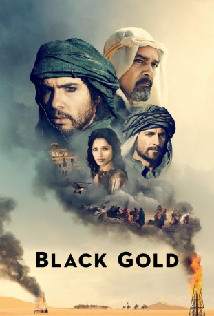

#29 Black Gold
Alternativ: Day of the Falcon (Originaltitel)
 
 IMDB-Wertung: 6.7 / 10
IMDB-Wertung: 6.7 / 10  Metascore: 32
Metascore: 32 
Der Reichtum der Wüste mag sich dem Betrachter nicht gleich erschliessen, was im Charakter des Schatzes liegt, der tief unter der Oberfläche verborgen liegt: Erdöl, das sogenannte schwarze Gold. Um selbiges geht es auch in dem Film Black Gold, der auf der arabischen Halbinsel spielt. Wir befinden uns zu Beginn der 1930er Jahre: Die beiden Anführer Nesib, Emir von Hobeika, und Amar, Sultan von Salmaah, haben nach einer verheerenden Schlacht, die Nesib für sich entscheiden konnte, einen Friedensvertrag ausgehandelt. Dieser sieht vor, dass zwischen den beiden Reichen eine Art Sicherheitszone eingerichtet wird, die keiner betreten darf. Weiterhin muss Amar Nesib seine Söhne Saleeh und Auda als Unterpfand übergeben. Diese wachsen bei Nesib zu jungen Männern heran. Als ausgerechnet in der Sicherheitszone das schwarze Gold entdeckt wird, gerät Auda zum Spielball der beiden Stammesfürsten.
Jahr: 2011
Dauer: 130 Minuten
FSK: 12
Land: Frankreich Studio: UPITonspuren: DTS - ,
Untertitel:
Auflösung: 720p (1280×544) Größe: 5273 MB
Genre: Action, Abenteuer, Drama, Geschichte, Krieg
Regisseur:  Jean-Jacques Annaud
Jean-Jacques Annaud
Drehbuch: Menno Meyjes, Jean-Jacques Annaud, Alain Godard, Hans Ruesch
Soundtrack: James Horner
Darsteller:
 Tahar Rahim als Prince Auda
Tahar Rahim als Prince Auda Antonio Banderas als Emir Nesib
Antonio Banderas als Emir Nesib Mark Strong als Sultan Amar
Mark Strong als Sultan Amar Freida Pinto als Princess Leyla
Freida Pinto als Princess Leyla Riz Ahmed als Ali
Riz Ahmed als Ali Liya Kebede als Aicha
Liya Kebede als Aicha Corey Johnson als Thurkettle
Corey Johnson als Thurkettle Akin Gazi als Saleh
Akin Gazi als Saleh Eriq Ebouaney als Hassan Dakhil
Eriq Ebouaney als Hassan Dakhil- Lotfi Dziri als Sheikh Beni Sirri
- Jan Uddin als Ibn Idriss
- Mostafa Gaafar als Khoz Ahmed
- Adriano Giannini als Pilot
- Jamal Awar als Ahmed's Companion 2
- Amar Adatia als Mustapha
- Hichem Rostom als Nesibi Colonel
- Taoufik Ayeb als Sergeant Talib
- Driss Roukhe als Magrouf
- Ali Bennor als Doctor of Law
- Raouf Ben Amor als His Majesty's Theologian
- Jamil Joudi als Theologian with Thick Glasses
- Ramsi Lehner als Fadlallah
- Mohamed Ali Nahdi als Young Doctor
- Walid Nahdi als Tariq
- Med Kouka als Sheikh Al Talebyn
- Mahmoud Larnaout als Sheikh Bani Sadr
- Fethi Akkari als Sheikh Bani Khalid / Venerable Theologian
- Abdelmajid Lakhal als Old Imam
- Mohammed Sassi Ghorbali als Al Gloui
- Tayeb Oueslati als Taunting Theologian
- Ziad Ghaoui als Shortlegged Theologian
- Abdellatif Kheireddine als Lisping Theologian
- Kaoutar Boudarraja als Harem Woman 1
- Rania Gabsi als Harem Woman 2
- Abdellatif Bouallegue als Bedouin Tracker 1
- Helmi Dridi als Young Theologian
- Dalila Meftahi als Lady in Waiting
- Mourad Ben Nefla als Khoz Ahmed's Companion 1
- Saifeddine Louati als Khoz Ahmed's Companion 3
- Med Sayari als Saleh's Guard 1
- Bechir Salhi als Saleh's Guard 2
- Abderrazek Abdessalem als Askari Guard
- Faycal Albaker als Pigeon Handler 1
- Mohammed Alibrahim als Pigeon Guard II
- Mondher Aouidet als Bani Sadr Hostage
- Sarah Aoussaji als Leyla 11 years
- Chedly Arfaoui als Barbier
- Salah Azadou als Beni Sirri Warrior
- Mohamed Hedi Bahri als Litigant 1
- Kamel Bouazizi als Beni Sirri Messenger
Datei: X:\2011(A-F)\Black Gold (2011, FSK, 1280x544).mkv seit 02.02.2015
Festplatte: HD 2010(G-Z)-2011(A-F)
 Es gibt insgesamt 86 Filme in der Gruppe '2011(A-F)'
Es gibt insgesamt 86 Filme in der Gruppe '2011(A-F)'